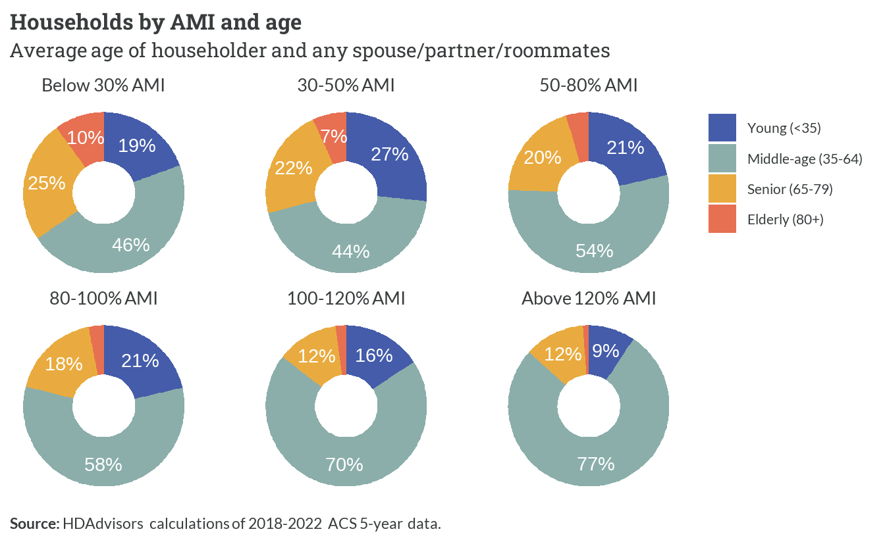
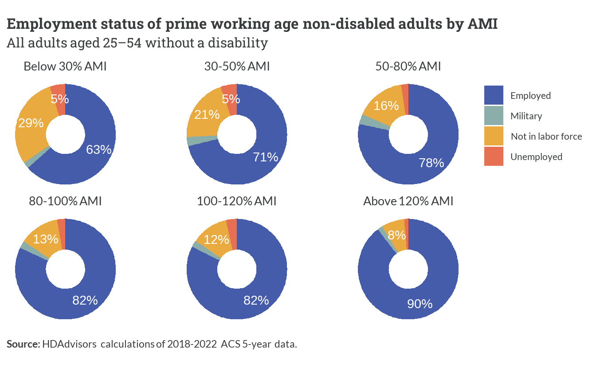

| Income group (AMI) | Description |
|---|---|
| Above 120% AMI | High-income |
| 100-120% AMI | Above-average income |
| 80-100% AMI | Moderate-income |
| 50-80% AMI | Low-income |
| 30-50% AMI | Very low-income |
| Below 30% AMI | Extremely low-income |
| Zero or negative income | No income |
3 Regional spectrum
This report outlines the housing spectrum concept and its utility for understanding housing market dynamics. It includes assessments of households in the region by various demographic and socioeconomic characteristics, primarily by wages/income. Special analysis for the region’s core workforce (i.e. persons both living and working within the region) can be found in Chapter 4.
How AMIs and the “region” are defined
The Area Median Income (AMI) categories in the regional housing spectrum are custom limits developed from the same methods used by the U.S. Department of Housing and Urban Development (HUD). Because HUD does not publish official limits for just the Fredercksburg region, new AMIs were calculated using the latest available microdata from the American Community Survey (ACS).
ACS microdata are available at the same geography served by the George Washington Regional Commission (GWRC), known officially as Planning District 16. The five localities in this area include:
- City of Fredericksburg
- Caroline County
- King George County
- Spotsylvania County
- Stafford County
Together, these jurisdictions are collectively referred to as “the region” throughout the report.
See Chapter 2 for a detailed explainer on HUD AMIs and the specific methods used to generate custom income limits for the region.
3.1 Overview
With few exceptions, housing opportunities are primarily limited by how much money a household has available to buy or rent a home. To create a regional housing spectrum, we first need to group households according to their incomes. The categories used here, along with their respective plain-language descriptions, are shown below.
Income
Based on 2018-2022 ACS 5-year estimates, there are approximately 385,000 persons living in 132,300 households across the region.1 Over a third (36.1%) of these are high-income households. The next most common group are low-income households (18.4%). All other households with positive incomes are roughly divided even (at 10-13% each) among other income groups.
1 Persons living in group quarters, such as college dorms and nursing homes, are excluded from this analysis.
Households with no income excluded
Fewer than 1,000 households (<1%) did not have a net positive income for the 12 months prior to their survey response. While the housing needs of this small group represent an outsized component of the region’s housing challenges, the small sample of responses prevents reliable estimates from being calculated. As a result, these records are mostly excluded from the remainder of the report.
We can provide a clearer picture of actual household incomes within these AMI groups by plotting their distributions, as shown in the figure below. The overlapping curves demonstrate that while incomes generally increase with higher AMI percentages, there’s significant variation within each group due to the variety of household sizes represented.
This table adds the typical range for each AMI group to its descriptions.2 For example, we now know to associate low-income households with incomes between roughly $50,000 and $90,000.
2 Here, typical range includes all values between the 10th and 90th percentiles. This removes outliers and reflects the middle 80% of households within each group.
| Income group (AMI) | Description | Typical range |
|---|---|---|
| Above 120% AMI | High-income | $124,300 - $292,700 |
| 100-120% AMI | Above-average income | $93,000 - $140,000 |
| 80-100% AMI | Moderate-income | $75,000 - $116,000 |
| 50-80% AMI | Low-income | $49,000 - $88,000 |
| 30-50% AMI | Very low-income | $28,600 - $51,500 |
| Below 30% AMI | Extremely low-income | $3,500 - $28,000 |
Tenure
For every 100 households in the region, 76 own their homes. Of these 76 homeowners, 58 are still making mortgage payments, while 18 have fully paid off their homes. The other 24 out of every 100 households are renters.
While homeownership becomes less common as we move down the income scale, homeowners still outnumber renters in every income group except for extremely low-income households. Of note are the slightly higher shares of homeowners below 50% AMI without mortgages—likely a reflection of seniors on fixed incomes who live in the same homes they purchased over 30 years ago.
Household characteristics
The most common type of household in the region are those headed by a married (or unmarried) couple. Single persons living alone are the next most common, and make up larger shares of households with incomes below 50% AMI. Single parents with at least one child are also more prevalent among lower-income households.
Middle-aged households—where the average age of primary adults under one roof is between 35 and 64—are the most prevalent age group across every income level. Since these are the prime income-earning years for most adults, middle-aged households are a larger share of higher income households. Conversely, young households and senior/elderly households are more likely to have below-average incomes.

Only a third of all households have at least one school-aged child under 18. While this share is fairly consistent across all income levels, households earning between 50% AMI and 120% AMI are slightly more likely to have children than households with the lowest and highest incomes.
Employment
The majority of adults in the region who are between 25 to 54, and who do not have a disability, are currently employed or looking for work. While another small share are active duty members of the military, any of those adults not actively working or seeking jobs are outside of the labor force. With very little or no income of their own, non-working individuals are much more likely to be part of households below 50% AMI.
Who could work, but isn’t?
Among persons in extremely and very low-income households who are not in the labor force and do not have a disability, many are probably stay-at-home moms. These individuals are mostly women (83%) who live with at least one earner (80%), and live with at least one child (80%).

Only 18% of all households in the region do not include someone earning income.3 The majority of those are senior or elderly households (76%) with lower incomes. Households with incomes between 30% AMI and 80% AMI are more likely than average to have just a single earner, while double-earner households are increasingly prevalent as incomes go up.
3 A person is an earner if their total pay from wages and/or self-employment income over the last 12 months is at least $5,000.
Higher-income groups also have a noticeable share of households with three or more earners. Many of these multiple-earner households (68%) are families with at least one younger, working adult child still living with parents who have not retired.